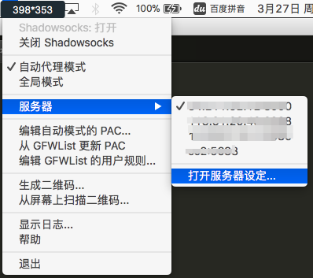
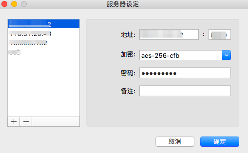
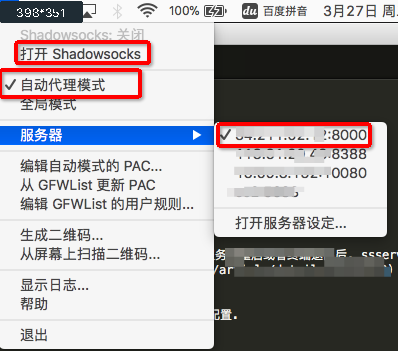
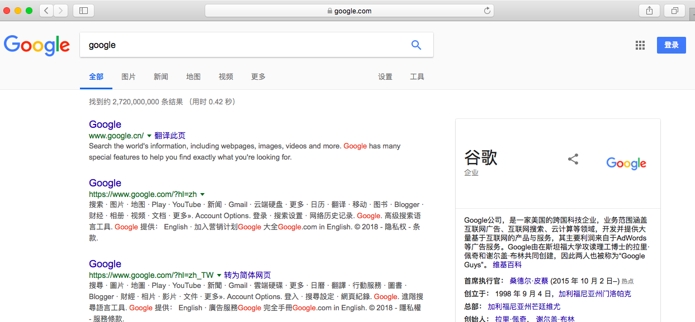

为什么你访问不了 Google?
是因为 GFW 的不允许你访问.
为什么你可以访问 Apple?
是因为 GFW 允许你访问.
GFW 的大概原理, 大家可以查看这篇文章了解下.
如果你按照这篇文章购买了一台国外的服务器, 那就可以通过这台服务器作为跳板, 逃过 GFW 的法眼偷偷访问 Google 了.
Shadowsocks
Shadowsocks 其实就是个代理工具, 它有以下一些特点:
- Shadowsocks使用自行设计的协议进行加密通信。
- 加密算法有AES、Blowfish、IDEA、RC4等，除建立TCP连接外无需握手，每次请求只转发一个连接，因此使用起来网速较快，在移动设备上也比较省电。
- 所有的流量都经过算法加密，允许自行选择算法，所以比较安全。
- Shadowsocks通过异步I/O和事件驱动程序运行，响应速度快。
- 客户端覆盖多个主流操作系统和平台，包括Windows、OS X、Android、Linux和iOS系统和路由器（OpenWrt）等。
- 专为移动设备和无线网络优化。
安装 Shadowsocks 服务端
登录服务器
1 | ssh ubuntu@ec2 -i xxx.pem |
检查是否已安装 Python
1 | python -V |
如果打印出: Python 2.7.12 表明系统已安装 Python, 如果打印出The program 'python' is currently not installed... 则说明没有安装 Python. [注1]
如果没有安装 Python, 先按照这个教程来安装好 Python.
安装 ssserver
1 | pip install shadowsocks |
新建 ss 配置文件
1 | vi /etc/shadowsocks.json |
填写内容:
1 | { |
此时, 运行 ssserver -c /etc/shadowsocks.json 其实就已经可以将 ssserver 运行起来了. 只不过这个时候, 服务器重启或者终端退出后, ssserver 这个进程都会退出, 为了让 ssserver 一直保持运行状态, 可以使用Supervisor 或者screen来辅助一下.
使用 Supervisor 的话, 可以参考这篇文章的末尾来进行配置.
安装 Shadowsocks 客户端
访问官方的下载页面下载对应平台的安装包进行安装好后运行
客户端配置
打开 服务器设定

新增一台服务器

填写好服务器的 IP 地址, IP 地址就是安装 ssserver 的那台机器的外网 IP; 端口号默认为的8388, 如果你在 ssserver 的配置文件里填写的server_port字段不是8388这里要相应地更换端口号; 加密方式默认为aes-256-cfb, 这个对应 ssserver 配置文件里的method字段; 密码就是 ssserver 配置文件里的password字段对应的值.
开启客户端

偷偷翻吧

注释
- 注1: 也可能是 python 安装完成后, 当前用户的环境变量里没有配置 python 路径
参考资料
- 维基百科: https://zh.wikipedia.org/wiki/Shadowsocks
- GFW 学习: http://allenn.cn/articles/2016-10/2016-10-20-learn-gfw/
- Supervisor: https://www.iwwenbo.com/0-1-shadowsocks-start/
(全文完)